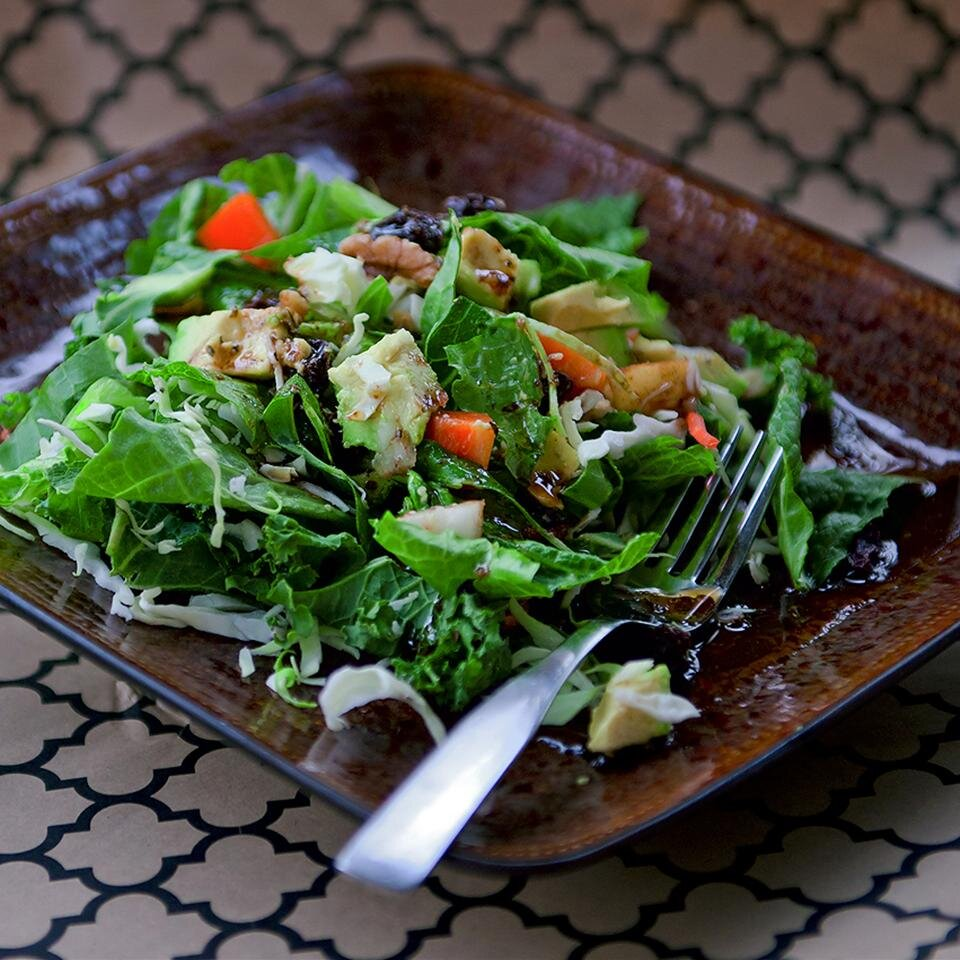

Winter Green Salad

People tend to forget to eat salads and other raw foods in the cold weather. This salad is a good way to get your greens by combining somewhat heartier salad textures.
I find that this salad is filling enough to be a main course, with a bit of bread or some rice cakes on the side. It will also work as an appetizer in a smaller serving.
Ingredients:
Salad
- 4 collard leaves, trimmed and finely chopped
- 1/3 brunch kale, trimmed and chopped
- 1 head romaine lettuce, chopped
- 1/4 small head red cabbage, chopped
- 1 Bosc pear, cubed
- 1/2 Bermuda onion, finely diced
- 1/2 orange bell pepper, diced
- 1/2 Florida avocado - peeled, pitted, and diced
- 1/2 carrot, grated
- 5 cherry tomatoes, halved
- 7 walnuts halves, crushed
- 2 tablespoons raisen,
Dressing
- 6 tablespoons olive oil
- 3 tablespoons balsamic vinegar
- 1 tablespoon wildflower honey
- 1 tablespoon orgeano, crushed
- 1 1/2 teaspoon chili powder
- 1 teaspoon Djon mustard
- 1 clove garlic
- 1/2 teaspoon salt
- 1/4 teaspoon crushed black peppercorns
Steps:
- Mix collard greens, kale, romaine, cabbage, pear, onion, orange bell pepper, avocado, carrot, tomatoes, walnuts, and raisins together in a large bowl.
- Combine olive oil, vinegar, honey, oregano, chili powder, mustard, garlic, salt, and black pepper in a glass jar with a lid. Cover jar with lid
and shake vigorously until dressing is well mixed. Pour dressing over salad; toss to coat.